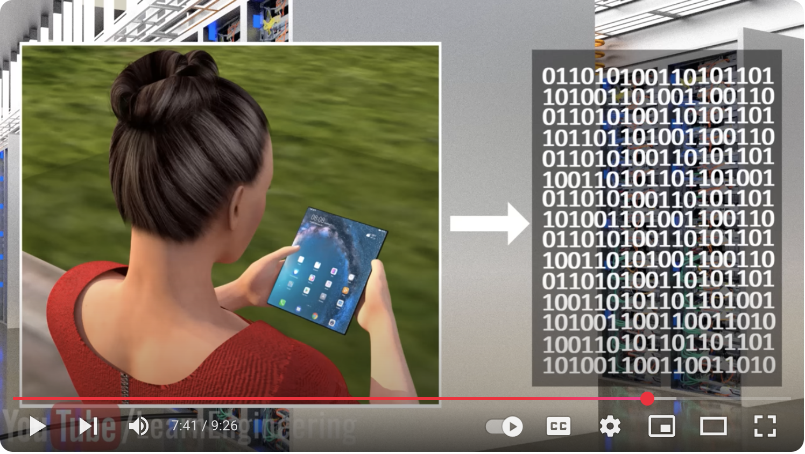
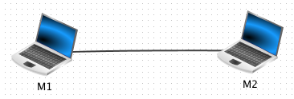
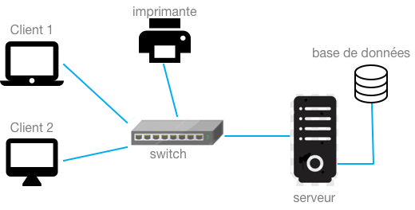
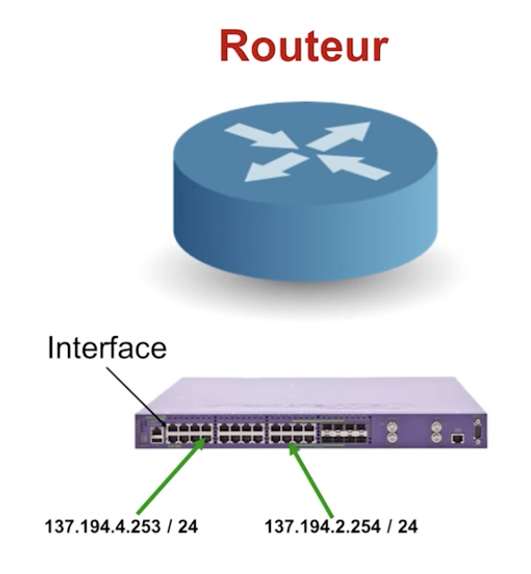
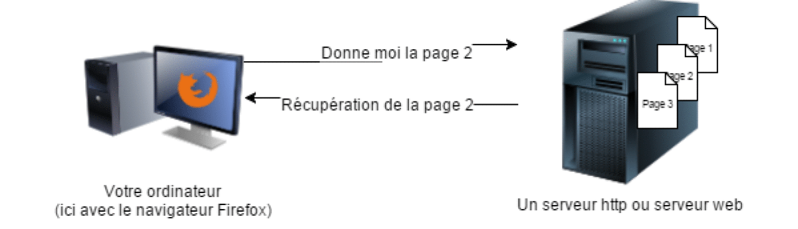

reseau local et reseau internet

Comment fonctionne internet - Youtube
Faire communiquer des ordinateurs
Une première idée naïve : tout usage du numérique met des machines en connexion, et qui échangent des données.

communication avec 2 ordinateurs
- grand nombre de connexions (et de liaisons physiques) au départ de chaque ordinateur
- grand nombre de ports utilisés
Internet ne constitue pas un graphe complet, c’est à dire un reseau dans lequel chaque machine est directement connectée à une autre.
Il faudra d’autres éléments pour connecter les ordinateurs entre eux.
Reseau d’ordinateurs
Qu’est ce qu’un système informatique ?
Un système informatique fonctionne sur le modèle client-serveur :
Les parcs informatiques des écoles, universités, et entreprises ont leur activité qui dépend d’informations partagées sur leur réseau. (gestion des salles, ressources, identité des étudiants, des clients, les stocks, la comptabilité, les états financiers,…). En conséquence, une panne informatique ne leur permettrait plus de fonctionner. C’est pour cette raison que les ordinateurs doivent être connectés, que ces informations doivent être distribuées; que l’information doit être accessible, même si l’un des ordinateurs est en panne.
Un système informatique est alors constitué :
- d’une ou plusieurs base(s) de données
- d’ordinateurs serveurs qui stockent les bases de données
- d’ordinateurs clients : des ordinateurs plus simples, et qui doivent avoir accès aux ressouces.

local area network (LAN)
des services diversifiés
Un réseau d’ordinateurs peut aussi servir à fournir des services de communication :
- courrier électronique
- outils de collaboration (redaction à plusieurs)
- visioconférence
- la conclusion d’affaires par voie électronique, commandes en temps réel
- logiciel partagé
C’est l’utilisation d’un serveur partagé dans le réseau qui permet d’acceder à ces services.
Certains de ces services peuvent aussi être fournis par un serveur sur un réseau externe, accessible depuis internet. C’est ce que l’on appelle le cloud : la livraison de ressources et de services à la demande par internet.1
Un réseau d’ordinateur peut aussi servir à partager du matériel (une imprimante), ou une connexion internet (le routeur). (voir note en bas de page sur la configuration d’un reseau local2)
Le commutateur (switch) et le routeur
Les appareils ne sont pas forcément connectés directement, mais peuvent l’être au moyen d’un switch. (concentre les liaisons et possède une table de routage avec les adresses mac des ordinateurs reliés).
les switchs (commutateurs) peuvent lire les adresses matérielles des paquets entrants afin de les transmettre à la destination appropriée.
Les réseaux sont alors reliés entre eux par un routeur
réseaux d'ordinateurs

le routeur est l’appareil disposant plusieurs adresses IP, une adresse par interface (voir plus loin). Il fait office de passerelle entre les périphériques sur un réseau local (LAN) et Internet. Dans un réseau de réseaux, cette machine doit posséder plusieurs interfaces (plusieurs cartes réseau), chacune reliée à un réseau. Son rôle va être d’aiguiller les paquets reçus entre les différents réseaux.

Un routeur possède plusieurs interfaces
Différences entre reseau local et reseau internet
Reseau local: Systeme réparti3
Un système réparti permet de partager des ressources, données et logiciels.
Avec un réseau local d’ordinateurs, qui peut constituer un système réparti, l’utilisateur se trouve devant la réalité des machines et leurs caractéristiques diverses, la varieté des équipements, et de leur système d’exploitation; pour executer un programme sur une machine distante, l’usager doit ouvrir une session. La maitenance d’un reseau local demande une bonne connaissance de tous ces matériels.
Et si l’un des ordinateurs tombe en panne, les autres ordinateurs risquent de s’en apercevoir (base de donnée inaccessible, etc…).
Définition: Un système réparti est un système qui vous empêche de travailler quand une machine dont vous n’avez jamais entendu parler tombe en panne.
Des exemples de systèmes répartis: un centre de documentation, bibliothèque, reseau de lycée, contrôle et organisation d’activité en temps réél,…
Pour approfondir : (Wikihow) comment configurer son réseau local ? 2
Reseau internet: un système distribué4
Lorsque l’on utilise internet, on ne voit plus cette variété d’équipement.
le système distribué est un ensemble d’ordinateurs indépendants, présenté à l’utilisateur comme un système unique cohérent. Souvent une couche logicielle intermédiaire appelée middleware située au dessus du système d’exploitation est responsable de son implémentation.
Un exemple est le web dans lequel toute information apparait comme un document. C’est donc un logiciel élaboré au dessus du réseau, qui nous fait oublier la variété des supports utilisés pour transmettre les données (Serveur, Adsl, Box, wifi, bluetooth…).
Définitions
Un système distribué: C’est un ensemble d’ordinateurs indépendants qui apparaît à un utilisateur comme un système unique et cohérent
Internet n’est pas un réseau d’ordinateurs. C’est un réseau de réseaux.
Le web, c’est un système distribué opérant au-dessus d’internet.
Caractéristiques physiques : canal de transmission:
1. reseau local
Deux critères permettent de les caractériser : la technologie de transmission utilisée, et leur taille.
Dans un reseau local, les supports de transmission des données peuvent être :
- cable ethernet
- wifi (ondes EM)
- bluetooth (ondes EM à courte portée)
2. reseau internet
Une fois sorties du reseau local, les transmissions peuvent se faire par:
Remarque: L’utilisation d’internet demande un abonnement à un FAI.
Adressage des machines.
adressage dans un reseau local: MAC
une adresse MAC (Media Access Control), appelée également adresse Ethernet, est l’adresse physique d’une interface (carte réseau, wifi, …). Chaque adresse MAC est normalement unique au monde et fournie par le fabricant de l’interface.
Cette adresse est constituée de 6 octets, soit 12 caractères hexadécimaux, comme par exemple:
$$01:b8:43:c4:85:a3$$Un ordinateur qui reçoit un message par l’une de ses interface, va lire si l’adresse MAC est bien la sienne. Sinon, c’est que le message ne lui est pas destiné: il détruit alors le message.
Dans un reseau local où les machines sont interconnectées via un switch: Pour envoyer la trame vers la bonne machine, le switch se sert de l’adresse MAC destination contenue dans l’en-tête de la trame. Il contient en fait une table qui fait l’association entre un port du switch (une prise RJ45 femelle) et une adresse MAC. Cette table est appelée la table CAM.
adressage IP
une adresse IP est un identifiant numérique unique attribué à chaque appareil (appareils mobiles, ordinateurs, routeurs, imprimantes, consoles de jeux, etc.) connecté à un réseau TCP / IP comme Internet. Plus précisemment, c’est l’identifiant de la carte reseau, reelle ou virtuelle. Chaque dispositif peut se connecter grâce à cette adresse IP à d’autres périphériques et partager des informations. Il s’agit du Protocole Internet (IP).
Question: Est-il possible de connaître l’emplacement de mon ordinateur (smartphone, …) en connaissant son adresse IP?
En principe, non, pas exactement, car mon dispositif possède une adresse IP privée… Il existe 2 types d’adresses IP:
-
Adresse IP privée: 2 machines peuvent avoir la même adresse privée à condition qu’elles soient sur 2 reseaux privés distincts. Pour une machine dotée d’une adresse privée qui doit accéder à internet, une traduction de son adresse privée en adresse publique est nécessaire. C’est le mécanisme NAT (Network Adress Translation) qui assure cette fonction. Ce mécanisme de traduction d’adresse réseau se fait par la passerelle, qui se situe à l’interface entre les réseaux privés et les réseaux publics. Elle est aussi nommée routeur (gateway). Une passerelle possède au moins 2 interfaces reseau.
-
adresse IP publique: adresse attribuée aux machines connectées sur Internet. Ce sont les FAI qui sont autorisés à affecter des adresses publiques. Ces adresses sont uniques au niveau mondial. L’essor constant d’internet au niveau mondial fait que l’on migre progressivement de la norme IPv4 vers IPv6. Ce sont deux protocoles réseau de la couche 3 du modèle OSI (Open Systems Interconnection).
IPv4
Ces adresses IP constituées de 4 nombres sont les plus répandues à l’heure actuelle, on les appelle IPv4.
Un exemple d’adresse IPV4: (exprimée par 4 nombres decimaux 0-255)
$$192.168.0.10$$Bien que codés sur 32 bits (4 octets), leur nombre se révèle assez limité : il n’y a en effet “que”
$$256×256×256×256$$possibilités d’IP, soit
$$256^4=4\phantom*294\phantom*967\phantom*296$$(plus de 4 milliards). Ce nombre a l’air grand, mais on finira prochainement par l’atteindre avec la multiplication des ordinateurs et des serveurs reliés à Internet. C’est pourquoi ces IP ont vocation à être remplacées par un nouveau système : IPv6 (8 groupes de 2 octets)
IPv6
Ce sont des adresses IP codées sur 128 bits, soit 16 octets, ou 32 caractères hexadecimaux.
La nouvelle forme d’IP, que l’on va rencontrer de plus en plus, a la forme suivante : (exemple)
$$1703:01b8:43c4:85a3:0000:0000:a213:bba7$$Leur nombre est d’environ 10^29 fois plus important que pour les adresses IPv4.
DNS, IP et URL
Lorsque l’on demande un service sur internet, on ne saisit pas http://adresse IP mais http://URL de la page depuis la barre du navigateur. Il y a alors plusieurs étapes avant d’obtenir une ressource du serveur:
- Le navigateur demande l’adresse IP correspondant au domaine mentionné dans l’URL. Il demande ce service à un serveur DNS.
le DNS: un enorme repertoire contenant les adr IP
- Le navigateur se présente alors au serveur, qu’il arrive à joindre grace à son adresse IP.
- Une fois la connection établie, le navigateur envoie sa requête, qui est souvent la demande d’une page internet.
- Le serveur lui repond en lui envoyant la ressource demandée.

modèle client-serveur
En pratique, la ressource n’est pas envoyée en entier par le serveur, mais par petits morceaux. Cela rend l’utilisation d’internet plus efficace. (voir aussi le cours sur le modele OSI et le protocole TCP )
le protocole IP: c’est lui qui permet de se connecter à un autre ordinateur. Il gère l’adressage.
le protocole TCP: permet d’envoyer les paquets d’un ordinateur vers un autre ordinateur. Il gère le routage et l’interconnexion des différents réseaux.
Liens
-
Le cloud : désigne le stockage et l’accès aux données par l’intermédiaire d’internet plutôt que via le disque dur d’un ordinateur. Mais aussi des services rendus par des logiciels hébergés côté serveur. ↩︎
-
configurer son réseau local (Wikihow) : https://fr.wikihow.com/configurer-un-réseau-local ↩︎ ↩︎
-
Systèmes répartis: Ce sont des systèmes pour lesquels les ordinateurs mis en reseau ont un couplage fort. Des exemples de systèmes répartis: un centre de documentation, bibliothèque, reseau de lycée, contrôle et organisation d’activité en temps réél,… ↩︎
-
Système distribué: Les ordinateurs du reseau ont un couplage faible, et communiquent par echange de messages de manière asynchrone. La difficulté de mise en oeuvre d’un algorithme sur un système distribué, est que l’on n’a pas connaissance de l’état global du système (routage sur internet). ↩︎